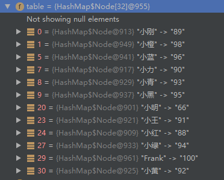
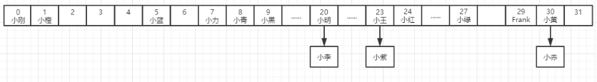
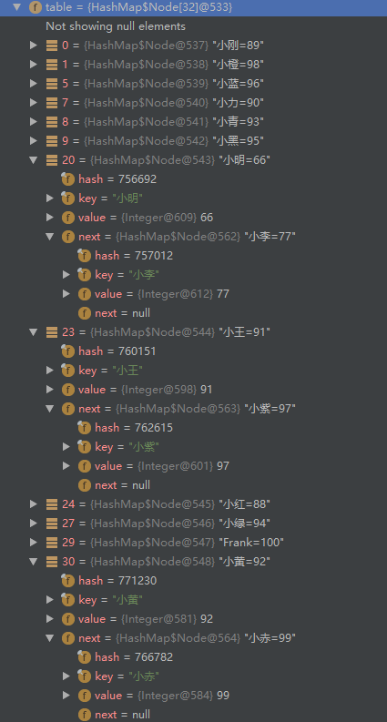

准备了很长时间，终于理清了思路，鼓起勇气，开始介绍本篇的主角——HashMap。说实话，这家伙能说的内容太多了，要是像前面ArrayList那样翻译一下源码，稍微说说重点，肯定会让很多人摸不着头脑，不能把复杂的东西用尽量简单的方式说明白，那就说明讲的挺失败的。所以这次决定把内容分四篇进行讲解，
第一篇主要讲解HashMap中的结构，重要参数和重要方法，以及使用中需要注意的地方和应用场景。
第二篇主要讲解HashMap中的散列算法，扰动函数以及扩容函数。普通节点的较深入的解析其中算法的妙处。
第三篇主要讲解HashMap中的EntrySet，KeySet和Values。
第四篇主要讲解HashMap中的TreeNode结构以及元素增减时的结构调整方式。（以JDK8中的红黑树进行讲解）。
因为HashMap中可以说说的点实在太多了，这里选取了比较重要的几点进行说明，四篇的角度和深度各不一样，这样不同阶段的同学也可以选取不同的部分进行阅读，第一篇属于简单易懂的初级部分，第二、第三篇和第四篇属于HashMap的高级部分，如果阅读有难度，可以先跳过，以后再来进行阅读。
好了，话不多说，接下来就进入我们的主题了。
本篇将摈弃之前的讲法，直接摆几百行源码实在是太干了，我们得弄湿一点才好消化（滑稽），接下来将用图文并茂的方式进行说明。
通过本篇，你将了解以下问题：
HashMap的结构是什么？
HashMap的优点和缺点是什么？
什么时候该使用HashMap？
HashMap中的常用方法有哪些？
HashMap的get()方法和put()方法的工作原理是什么？
HashMap中的碰撞探测(collision detection)以及碰撞的解决方法是什么？
如果HashMap的大小超过了负载因子(load factor)定义的容量，怎么办？
在设置HashMap的键是需要注意什么？可以使用自定义的对象作为键吗？
嗯，所以内容还是挺多的，干货也不少。我们先来看一个HashMap的小栗子：
public class Test {
public static void main(String[] args){
Map<String, Integer> map = new HashMap();
map.put("小明", 66);
map.put("小李", 77);
map.put("小红", 88);
map.put("小刚", 89);
map.put("小力", 90);
map.put("小王", 91);
map.put("小黄", 92);
map.put("小青", 93);
map.put("小绿", 94);
map.put("小黑", 95);
map.put("小蓝", 96);
map.put("小紫", 97);
map.put("小橙", 98);
map.put("小赤", 99);
map.put("Frank", 100);
for(Map.Entry<String, Integer> entry : map.entrySet()){
System.out.println(entry.getKey() + ":" + entry.getValue());
}
}
}输出也很简单：
小刚:89
小橙:98
小蓝:96
小力:90
小青:93
小黑:95
小明:66
小李:77
小王:91
小紫:97
小红:88
小绿:94
Frank:100
小黄:92
小赤:99可以看到，HashMap中存储的顺序跟我们放入的顺序有些不太一样，但是每次运行的结果都是一样的，以一种神奇的顺序输出着，为什么会这样呢？不要着急，让我们先来打个断点看看。

可以看到，这个HashMap对象里，有一个table字段，可以看出，它是一个数组，我们put的成绩信息，就在这个家伙里面了，你看看，这个顺序跟上面的输出顺序是不是很像？
不过，等一下，你有没有发现，小李，小紫，小赤失踪了。。这个问题，不要着急，待会我们就一起去找他们。
HashMap里的数据结构是数组+链表的形式来存储节点的，每个节点以键值对（Node<K,V>）的形式存储，上面看到的table，就是HashMap中存放值的地方，它的数据结构是这样的：Node<K,V>[] table；那这个Node到底是什么东西呢？我们来看看它的代码：
/**
* 用于大多数键值对的普通节点
*/
static class Node<K,V> implements Map.Entry<K,V> {
final int hash;
final K key;
V value;
/**
* 指向下一个节点的引用
*/
Node<K,V> next;
Node(int hash, K key, V value, Node<K,V> next) {
this.hash = hash;
this.key = key;
this.value = value;
this.next = next;
}
public final K getKey() { return key; }
public final V getValue() { return value; }
public final String toString() { return key + "=" + value; }
public final int hashCode() {
//返回key和value的哈希值的异或运算结果
return Objects.hashCode(key) ^ Objects.hashCode(value);
}
public final V setValue(V newValue) {
V oldValue = value;
value = newValue;
return oldValue;
}
public final boolean equals(Object o) {
if (o == this)
return true;
if (o instanceof Map.Entry) {
Map.Entry<?,?> e = (Map.Entry<?,?>)o;
if (Objects.equals(key, e.getKey()) &&
Objects.equals(value, e.getValue()))
return true;
}
return false;
}
}Node类继承于Map.Entry接口，如果对这个接口没有印象了可以回过头翻一下Map接口的内容，Node中的内容很简单，hash，键值信息和下一个节点的引用，Node之间正是通过这样的引用来连接起来形成一条链。再想想table的结构，Node<K,V>[]，现在是不是理解了什么是数组+链表的存储方式了？
什么？这样说的还不够形象？好吧，一图胜千言，之前说要用图文并茂的方式来进行讲解，所以还是一起来看几张图片

嗯，我们存储的数据在内存里就是这样的，我们再来看一下断点里的数据：

对比两幅图应该就能比较清楚的了解了，可以看出里面数组并不是顺序往里存的，中间有很多空的桶（每个格子称为一个bin，这里蹩脚翻译成桶），那为什么会是这样的顺序呢？我们来看看它的put方法：
/**
* 将map中指定key和value进行关联，如果map中已经存在该key的映射，则旧的值将会被替换。
* 返回该key映射的旧值，如果该key的映射不存在的话则返回null。
*/
public V put(K key, V value) {
return putVal(hash(key), key, value, false, true);
}
/**
* 实现 Map.put 和相关方法
*
* @param hash key的哈希值
* @param key key
* @param value key将要映射的value
* @param onlyIfAbsent 如果是true的话，将不会改变已存在的值
* @param evict 这个参数如果为true，那么每插入一个新值，就会把链表的第一个元素顶出去，保持链表元素个数不变
*/
final V putVal(int hash, K key, V value, boolean onlyIfAbsent,
boolean evict) {
Node<K,V>[] tab; Node<K,V> p; int n, i;
//如果当前table未初始化，则先重新调整大小至初始容量
if ((tab = table) == null || (n = tab.length) == 0)
n = (tab = resize()).length;
//（n-1）& hash 这个地方即根据hash求序号，想了解更多散列相关内容可以查看下一篇
if ((p = tab[i = (n - 1) & hash]) == null)
//不存在，则新建节点
tab[i] = newNode(hash, key, value, null);
else {
Node<K,V> e; K k;
//先找到对应的node
if (p.hash == hash &&
((k = p.key) == key || (key != null && key.equals(k))))
e = p;
else if (p instanceof TreeNode)
//如果是树节点，则调用相应的putVal方法
//todo putTreeVal
e = ((TreeNode<K,V>)p).putTreeVal(this, tab, hash, key, value);
else {
//如果是链表则之间遍历查找
for (int binCount = 0; ; ++binCount) {
if ((e = p.next) == null) {
//如果没有找到则在该链表新建一个节点挂在最后
p.next = newNode(hash, key, value, null);
if (binCount >= TREEIFY_THRESHOLD - 1) // -1 for 1st
//如果链表长度达到树化的最大长度，则进行树化
//todo treeifyBin
treeifyBin(tab, hash);
break;
}
if (e.hash == hash &&
((k = e.key) == key || (key != null && key.equals(k))))
break;
p = e;
}
}
//如果已存在该key的映射，则将值进行替换
if (e != null) { // existing mapping for key
V oldValue = e.value;
if (!onlyIfAbsent || oldValue == null)
e.value = value;
afterNodeAccess(e);
return oldValue;
}
}
//修改次数加一
++modCount;
if (++size > threshold)
resize();
afterNodeInsertion(evict);
return null;
}从这里可以看出往HashMap添加元素时的逻辑：
- 对key的hashCode()做一次散列（hash函数，具体内容下一篇讲解），然后根据这个散列值计算index（i = (n - 1) & hash）；
- 如果没有发生碰撞（哈希冲突），则直接放到桶里；
- 如果碰撞了，以链表的形式挂在桶后；
- 如果因为碰撞导致链表过长(大于等于TREEIFY_THRESHOLD)，就把链表转换成红黑树；
- 如果节点已经存在就替换old value(保证key的唯一性)
- 如果桶满了(超过负载因子*当前容量)，就要resize（重新调整大小并重新散列）。
也许你想知道这个table是什么东西，那我们顺便一起看看那几个重要的成员变量吧：
/* ---------------- 字段 -------------- */
/**
* 哈希表，该表在初次使用时初始化，并根据需要调整大小。 分配时，长度总是2的幂
*
* todo hashMap的结构
* todo transient
*/
transient Node<K,V>[] table;
/**
* 保存缓存的entrySet，注意AbstractMap中的字段是用于keySet() 和 values().
*/
transient Set<Map.Entry<K,V>> entrySet;
/**
* map中的键值对个数
*/
transient int size;
/**
* hashmap 结构性修改的次数，结构性修改是指改变hashmap中映射数量或者修改内部结构。
* 该字段用于在HashMap中创建基于集合视图的可失败快速的（fail-fast）迭代器。
*/
transient int modCount;
/**
* 下一个调整大小的值（容量*加载因子）。
*/
int threshold;
/**
* hashmap的装载因子
*/
final float loadFactor;table字段是中保存了我们的数据，类型是Node数组，Node的结构也很简单，只是简单的存放key和value，以及key的hash和指向下一个节点的引用。
/**
* 用于大多数键值对的普通节点
*/
static class Node<K,V> implements Map.Entry<K,V> {
final int hash;
final K key;
V value;
/**
* 指向下一个节点的引用
*/
Node<K,V> next;
Node(int hash, K key, V value, Node<K,V> next) {
this.hash = hash;
this.key = key;
this.value = value;
this.next = next;
}
public final K getKey() { return key; }
public final V getValue() { return value; }
public final String toString() { return key + "=" + value; }
public final int hashCode() {
//返回key和value的哈希值的异或运算结果
return Objects.hashCode(key) ^ Objects.hashCode(value);
}
public final V setValue(V newValue) {
V oldValue = value;
value = newValue;
return oldValue;
}
public final boolean equals(Object o) {
if (o == this)
return true;
if (o instanceof Map.Entry) {
Map.Entry<?,?> e = (Map.Entry<?,?>)o;
if (Objects.equals(key, e.getKey()) &&
Objects.equals(value, e.getValue()))
return true;
}
return false;
}
}在成员变量entrySet中缓存了Entry的集合（其实你仔细找找的话，会发现entrySet的存储元素逻辑并不简单，这将在第三篇里讲解）。threshold表示进行下一次重新调整的阈值（容量*装载因子），转载因子表示table最大装满程度，默认是0.75，即当容量被用掉75%后将会触发扩容，因为当table中的元素足够多时，发生冲突的概率就会大大增加，冲突的增多会导致每个桶中的元素个数变多，这样的话会使得查找元素效率变得低下，当同一个桶中元素个数达到8时，桶中的元素结构将转换为红黑树。
那么，问题来了，为什么是8，而不是6或者7,10呢？？？这个话题如果要深入探讨的话，又要说上一篇了。。。 这里我就引用一下JDK8中的HashMap的中注解：
* Ideally, under random hashCodes, the frequency of
* nodes in bins follows a Poisson distribution
* (http://en.wikipedia.org/wiki/Poisson_distribution) with a
* parameter of about 0.5 on average for the default resizing
* threshold of 0.75, although with a large variance because of
* resizing granularity. Ignoring variance, the expected
* occurrences of list size k are (exp(-0.5) * pow(0.5, k) /
* factorial(k)). The first values are:
*
* 0: 0.60653066
* 1: 0.30326533
* 2: 0.07581633
* 3: 0.01263606
* 4: 0.00157952
* 5: 0.00015795
* 6: 0.00001316
* 7: 0.00000094
* 8: 0.00000006
* more: less than 1 in ten million
*大致意思是，理想情况下，HashCode随机分布，当负载因子设置成0.75时，那么在桶中元素个数的概率大致符合0.5的泊松分布，桶中元素个数达到8的概率小于千万分之一，因为转化为红黑树还是比较耗时耗力的操作，自然不希望经常进行，但如果设置得过大，将失去设置该值的意义。
那么，问题又来了。。为什么是0.75，而不是0.5,0.8？？？ 这是一个经验值，在空间和时间成本中的折中，跟默认初始容量设置为16一样。看看JDK8中HashMap最开头的注释即可找到答案：（说实话，JDK中的注解真是太多太详细了，教科书式的代码人一般人写的还是不一样的）
* <p>As a general rule, the default load factor (.75) offers a good
* tradeoff between time and space costs. Higher values decrease the
* space overhead but increase the lookup cost (reflected in most of
* the operations of the <tt>HashMap</tt> class, including
* <tt>get</tt> and <tt>put</tt>). The expected number of entries in
* the map and its load factor should be taken into account when
* setting its initial capacity, so as to minimize the number of
* rehash operations. If the initial capacity is greater than the
* maximum number of entries divided by the load factor, no rehash
* operations will ever occur.再蹩脚的翻译一次：
* 通常，默认的负载因子（0.75）是在时间和空间成本上比较好的折中选择。如果设置成更高的值，虽然会
* 减少空间开销，但是会增加查找的成本（反应在HashMap的大部分操作中，包括get和put方法）。
* 在设置初始容量时，应该考虑映射中的条目数量以及负载因子，以尽量减少重新散列的次数。
* 如果初始容量大于最大词条数量除以负载因子，那么就不会发生重新散列操作。而且，装载因子和容量都是可以在构造函数中指定的：
/**
* 用指定初始容量和装载因子构造一个空的hashmap，
*/
public HashMap(int initialCapacity, float loadFactor) {
if (initialCapacity < 0)
throw new IllegalArgumentException("Illegal initial capacity: " +
initialCapacity);
if (initialCapacity > MAXIMUM_CAPACITY)
initialCapacity = MAXIMUM_CAPACITY;
if (loadFactor <= 0 || Float.isNaN(loadFactor))
throw new IllegalArgumentException("Illegal load factor: " +
loadFactor);
this.loadFactor = loadFactor;
//重新计算阈值
this.threshold = tableSizeFor(initialCapacity);
}
/**
* 用指定初始容量和默认的装载因子（0.75）构造一个空的hashmap
*/
public HashMap(int initialCapacity) {
this(initialCapacity, DEFAULT_LOAD_FACTOR);
}
/**
* 用指定默认容量（16）和默认的装载因子（0.75）构造一个空的hashmap
*/
public HashMap() {
this.loadFactor = DEFAULT_LOAD_FACTOR; // all other fields defaulted
}
/**
* 用另一个map来构造一个新的hashmap，并保留相同的映射。新的HashMap使用默认加载因子（0.75）和适合装下指定map中所有映射关系的
* 初始容量。
*/
public HashMap(Map<? extends K, ? extends V> m) {
this.loadFactor = DEFAULT_LOAD_FACTOR;
putMapEntries(m, false);
}如果不指定初始大小和加载因子，将使用默认的加载因子和默认的容量，而且HashMap中是使用懒加载的方式进行的，只有真正往里添加元素时才会初始化table。上面我们已经看过了put方法的实现，那我们再来看看get方法是怎样实现的：
/**
* 返回指定键映射的值，当该key不存在的时候返回null
*/
public V get(Object key) {
Node<K,V> e;
return (e = getNode(hash(key), key)) == null ? null : e.value;
}
/**
* 实现了Map.get 和相关方法
*/
final Node<K,V> getNode(int hash, Object key) {
Node<K,V>[] tab; Node<K,V> first, e; int n; K k;
if ((tab = table) != null && (n = tab.length) > 0 &&
(first = tab[(n - 1) & hash]) != null) {
//判断是否是第一个节点
if (first.hash == hash && // always check first node
((k = first.key) == key || (key != null && key.equals(k))))
return first;
if ((e = first.next) != null) {
if (first instanceof TreeNode)
//如果是树节点，则用TreeNode的getTreeNode方法来查找相应的key
return ((TreeNode<K,V>)first).getTreeNode(hash, key);
do {
//否则遍历链表来查找
if (e.hash == hash &&
((k = e.key) == key || (key != null && key.equals(k))))
return e;
} while ((e = e.next) != null);
}
}
return null;
}get的思路很简单。大致思路如下：
- 先匹配bucket里的第一个节点，直接命中则返回；
- 如果有冲突，则通过key.equals(k)去查找对应的entry
若为树节点，则在树中通过key.equals(k)查找，时间复杂度为O(logn)；
若为链表节点，则在链表中通过key.equals(k)查找，时间复杂度为O(n)。
好了，最重要的方法都介绍完了，是时候去救爷爷了，说错了，是时候来回答最开头提出的问题了：
1.HashMap的结构是什么？
HashMap是数组+链表的存储形式，默认的初始容量是16，默认的加载因子是0.75，当链表长度达到8时将会转化为红黑树来提高查找效率。
2.HashMap的优点和缺点是什么？
HashMap的优点是查找速度很快，我们可以在常数时间内迅速定位到某个桶以及要找的对象。缺点嘛，就是它的拿手好戏——散列算法是依赖key的hashcode，所以如果key的hashcode设计的很烂，将会严重影响性能。
极端情况下，如果每次计算hash值都是同一个值，那么会造成链表中长度过长然后转化成树，扩容时再散列的效果也很差的问题。 另一个极端情况. 每次计算hash值都是不同的值，那么就是HashMap中的数组会不断的扩容，造成HashMap的容量不断增大。
另一方面，HashMap是线程不安全的，如果想在并发编程中使用到HashMap，就需要使用它的同步类，Collections.synchronizedMap()方法将普通的HashMap转化成线程安全的，或者使用Concurrent包下的ConcurrentHashMap进行替换。
3.什么时候该使用HashMap？
因为HashMap查找速度很快，所以应用在经常需要存取元素的场景，比如要将一个List B中的元素根据另一个List A的元素来进行排序，那么需要经常将B中的元素来到A中进行查找，而查找一般都是使用遍历的方式进行的，如果List很大的情况下，效率问题还是需要考虑的，这时候如果将A中的元素存储在Map中，以B中的元素作为key，那么查找效率将大大提高，这是以空间换取时间的策略。
4.HashMap中的常用方法有哪些？
常用方法有put，get，putAll，remove，clear，replace，size。
5.HashMap的get()方法和put()方法的工作原理是什么？
通过对key的hashCode()进行hashing，并计算下标( n-1 & hash)，从而获得桶的位置。如果发生哈希冲突，则利用key.equals()方法去链表或树中去查找对应的节点。
6.HashMap中的碰撞探测(collision detection)以及碰撞的解决方法是什么？
当两个key的hashCode相同时，就会发生碰撞，就像上面的小明和小李，这时候后添加的元素将会以链表或树节点的形式挂在桶后面。
7.如果HashMap的大小超过了负载因子(load factor)定义的容量，怎么办？
如果HashMap的大小超过了加载因子*容量，那么将会进行扩容操作，扩容到原来的两倍。
8.在设置HashMap的键是需要注意什么？可以使用自定义的对象作为键吗？
设置的key尽量使用不可变对象，例如数值，String，这样可以保证key的不可变性，也可以使用自定义的类对象，但需要对hashCode方法和equals方法有良好的设计。
此处应有掌声，本篇终于讲解完毕，这段时间因为其他时间，一直没多少时间来写博客，耽搁了两个星期，对不住各位看官啦，不过写一篇博客真心挺花时间的，这篇文章我也是想了好几天才想好思路，HashMap的东西实在是太多了，细节不太可能面面俱到，而且如果事无巨细全部介绍的话，显然对初学者来说不够友好，所以才决定分成了四篇，这样大家可以根据自己能理解的程度选择性的阅读。